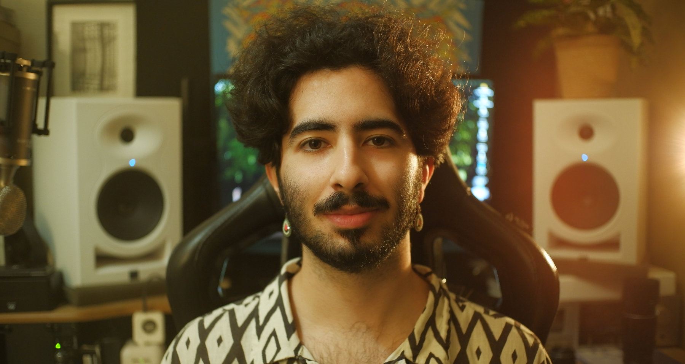

Born in 1998 in Viseu, Leonardo Patrício is a musician, producer, filmmaker, and audiovisual technician. His journey in sound began at the age of six, playing trumpet and saxophone in local philharmonic bands. He later studied piano with Ruslana Slabodukh at the Regional Music Conservatory of Vila Real and, in 2023, earned a degree in Music Production and Technologies from ESMAE, culminating his studies with the audiovisual installation Passing Gaps (2023). During this period, he attended masterclasses mentored by prominent figures such as Gustavo Costa, João Bessa, Vânia Rodrigues, Pedro Melo Alves, Bruno dos Reis, and Telmo Marques.
Since 2014, he's been composing and producing music, having released his debut album under the alias Folden (now retired) in 2017 via Exobolt. In 2019, he co-founded Bang Avenue with Guilherme Marta; their single "A Girl Called Depression" garnered widespread airplay on Antena 3 and RUM, leading to the EP Not an Album (2019) and the subsequent ALBUM (2021), which earned the “Artista Revelação” prize at Anim’Arte 2022. In 2024, he joined the project Líquen alongside Constança Ochoa, Buga Lopes, and Luís Keating. Following the release of their debut EP I, the group embarked on an extensive tour throughout 2025, having performed at Festival Paredes de Coura and NOS Alive, winning the 29th edition of Festival Termómetro and the “Best Project” award at Festival Emergente.
Active in various cultural spaces and festivals across Portugal since 2019, he has built a vast collaborative network spanning music and theatre. He has worked with artists and collectives such as Bela Noia, André Júlio Turquesa, Gonçalo Alegre, Bernardo Chatillon, O Marta, Tomás Alvarenga, Filipe Moreira (Produções Réptil), Gustavo Costa, Inês Luzio, Amarelo Silvestre, CEM Palcos, among others. He is currently active in the musical projects Líquen, Melífluo (with Gonçalo Tavares and Catarina Estácio), and Fábio Borges, while maintaining regular collaborations with the Porto-based promoter Machamba and the project Porta 253.
In the field of production and arts management, he serves on the Board of Directors of ANDAVIRA – Multidisciplinary Artistic Cooperative CRL, an entity dedicated to creating a sustainable platform for artistic production. Since 2024, he has been the executive producer of the Renaissance ensemble Arte Minima, steering projects such as Lusitano: Liber primus epigramatum (2024) and O Temp(l)o Revisitado (2025), including a 2025 European tour.
Parallel to his core artistic work, he develops community and social initiatives. Notable projects include the transdisciplinary choir Laurindinha, Libertei a Minha Voz (created in 2025 with Inês Luzio and Bernardo Chatillon), the project Políticas e Práticas da Amizade (AND Lab), PMF - Pomares Music Fest and À Mesa (collective founded by Patrícia Pinheiro in 2025).
Due to his long-time love for filmmaking - has been creating videos since 2012 - he recurrently does video work for culture and music related initiatives, such as documentaries and videoclips.
Nowadays, it’s from the liminality between image and sound that Leo breathes inspiration and singularity from, creating moving and vivid pictures with sound, and translating rhythm and harmony into visual experiences.